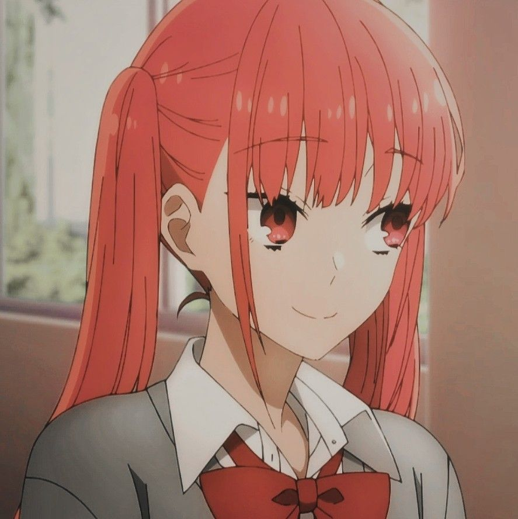

Characters
Kyoko Hori
Kyouko is normally a very energetic and popular person who always creates a happy atmosphere around herself. She is a hard-worker in all aspects of her life and is academically sound. When nervous or embarrassed, she tends to switch to a violent state. Hori is somewhat of a masochist- however this is only when it comes to Miyamura. Over the course of the story, she does not seem to be too bothered with girls talking to Miyamura but instead, worries that he might love a man. She once told him that it's okay to love another woman but not a man
Izumi Miyamura
Izumi is a gloomy, weird high schooler or so he’s portrayed in the beginning of the anime. However, he’s not as pessimistic and gloomy natured as his batchmates make him out to be. He appears to have very low self-esteem and is very awkward when talking to people he's not close with, often saying he can't connect well with others. Izumi is also quite laid-back towards his studies. He is very afraid of anything related to horror or gore but usually watches horror movies because Hori enjoys them. At times, Izumi can be rather dense and impulsive, which is likely the reason behind why he got his tattoos and his piercings.
Yuki Yoshikawa
Yuki has a typical bubbly and ditzy personality and often creates a fun and happy atmosphere for those close to her. when Yuki doesn't want someone to know something, she tries to hide it by covering it with a smile and the more she doesn't want to let go of something, the less she talks about it. Yuki can come off as someone who easily feels jealousy. It is possible that Yuki may also have an inferiority complex, as she makes negative remarks directed towards herself.
Toru Ishikawa
Toru comes off as a normal character who’s initially shown as someone with warm feelings for Kyoko and is a bit violent though he doesn’t put up much of a fight. He’s a caring person who later develops feelings towards towards Yuki.
Honoka Sawada
Sawada is shown as a character clingy towards Kyouko Hori hence she views Miyamura as a love rival, but also as a brotherly figure. She was very close to her older brother who passed away some years ago leaving a deep impact on her.
Kakeru Sengoku
Sengoku is a rather shy boy who gets embarrassed easily. He’s the Student Council President The slightest thing will make him cower in fear, insects. Sengoku is very smart, normally ranked #1 in terms of grades in the school.He is generally not very expressive with his emotions with the sole exception of his anger or irritation. so.
Remi Ayasaki
Remi is depicted as a childish girl who has a very straightforward personality who wears her emotions on her sleeve and is also a member of the Student Council. She seems to rely on other people's help regularly given she’s not very smart. She has her room filled with insects which her love interest Kakeru Sengoku hates to be in.
Sakura Kono
Sakura is a well-rounded, kind, and responsible person and is also a member of the Student Council. She is very hardworking, making sure that the Student Council does its work. She is insecure of herself. Her insecurity, however, is something that she slowly comes to terms with throughout the series.
Akane Yanagi
Yanagi is a gentle and mild mannered boy. However, due to his rather reserved personality and polite manner of speaking, he is sometimes seen as being unapproachable. But despite all of that, he actually wants to be friends with everyone.
Kouichi Shindou
Kouichi is shown to have a very kind and upbeat personality who is always seen smiling and he was very popular in middle school where he befriended Izumi Miyamura in middle school. Kouichi stood up for Izumi when Makio Tanihara told him he to not hang around him. Kouichi is the person Izumi believes changed him to feel free to be himself around others.
Makio Tanihara
Tanihara is a somewhat foul mouthed and crude guy. He has a past of bullying people, especially Miyamura.. Aside from this, he's relatively diligent.
Syu Iura
Syu is loud and outgoing. He's best friends with Ishikawa. He likes to play pranks on people, and tends to be the one starting the games or activities done by the group. At home, he is completely different, acting very subdued towards his younger sister, Motoko. However, despite this attitude, he still loves his sister very much, and tries to help in whatever way he can.
Souta Hori
Souta is an obedient child who has a close relationship with his sister and he is also very fond of Izumi Miyamura . Being a child, he can be very direct and is not embarrassed to bring up topics that Hori can't mention.